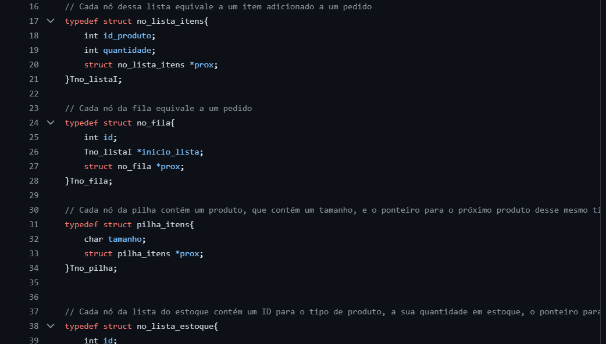

Projeto de Estrutura de Dados

Projeto de Estrutura de Dados para a matéria de SI201 (Estrutura de Dados 1) da UNICAMP. O projeto simula o funcionamento
de uma loja, em que há uma fila de pedidos, cada pedido composto de uma lista de itens, e a quantidade de itens representada por uma pilha.
Há ainda também uma lista ligada separada indicando o estoque da loja. O projeto foi inteiramente desenvolvido em C, com forte uso de ponteiros e structs.
Tecnologias Utilizadas
C
Pilhas
Filas
Listas Ligadas